Classes Of UNC Charlotte
Introduction
Course registration is a period of stress and confusion every college student faces each semester. Will they get the classes they desire, or will they settle for a bad class or none at all? During this project, we will look at which factors impact the fill ratio of a class the most. Can we find a correlation between elements that can tell us which classes students should likely have backups for because they are likely to fill up the most?
About the Data
The dataset we will use for this project was created by me (linked in references). I used an open API endpoint on the UNC Charlotte banner self-service to collect the data using Javascript and store it in CSV format. This data is for all classes offered at UNCC in the spring 2024 semester as of 11/24/2023. There are 52 main columns of data, with a total of 5712 rows, each being a unique section of classes. Of the columns, those that may be of interest for this project are:
- partOfTerm: Full, First Half, or Second Half
- scheduleTypeDescription: Lecture, Internship Independent Study, Lab, etc.
- subjectCourse: acronym representing the subject of the course (i.e., ACCT for accounting) and course number within the respective subject
- maximumEnrollment & enrollment: max students that can register and how many are registered
- creditHourSession: credits you can earn from the course
- sectionAttributes: any special attributes a class may have (i.e., general education requirements)
- instructionalMethodDescription: how the class is held face-to-face, async online, online at a specific time, etc.
- instructor: who is teaching the course
- meetingBuilding: where the class takes place
- meetingBeginTime & endTime: period the class takes during
- {days of the week}: each representing whether that class is held that day of the week
There are many other columns, as mentioned before, but they are not important for the purpose of this project. There are also values in some columns past 52 for courses that have more than one class session, like for classes with labs.
Methods and Evaluations
Now, before we move on to modeling, we must load and clean the dataset. Let's remove unnecessary data. 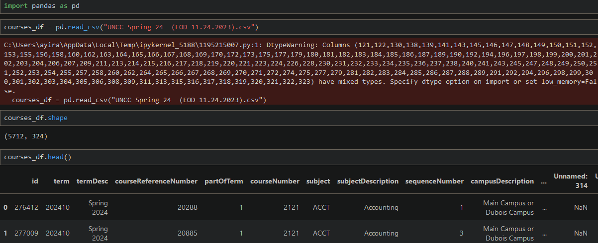 As stated earlier, columns past 52 are only useful when a class has multiple sections. Now since we are looking at generalized trends, we can remove these rows because if the trend doesn't appear after the removal of the rows, it is likely not a generalized trend. 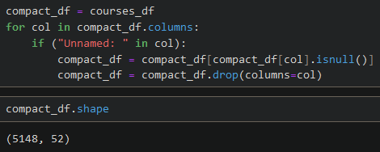 This removal reduces our column count from 324 to 52. It also removes the sections for certain classes that had data in them that brought the row count to 564 (~10% of the overall data). We also remove columns that I believe are insignificant (like termDesc etc.), contain information that can be derived from others (seatsAvailable, openSection, etc.), or contain the same information for all rows (linkIdentifier, isSectionLinked, etc.). 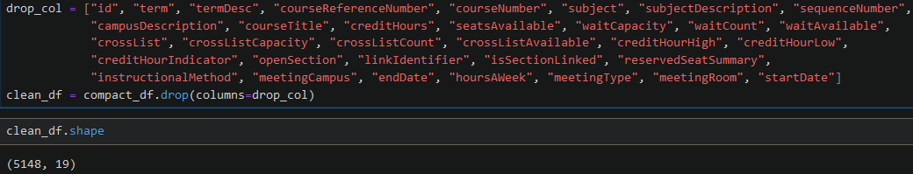 Start by checking the nulls in all columns before starting to clean them. 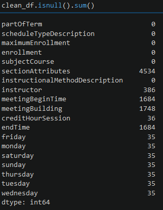 Now replace nulls in columns such as:
- days of the week with false
- meetingBeginTime and endTime with 0
- instructor and meetingBuilding with "None"
- drop rows with nulls in creditHourSession
- sectionAttributes with an empty string
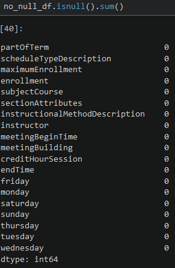
Now moving on to many processes to encode the non-numerical columns using multiple ways. Converting the data
types below:
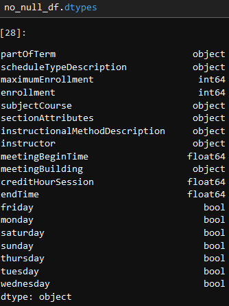
Due to the addition of new dummy columns, all the new data types are difficult to show, but you can check
out the code file to see them.
Now finally onto modeling. I start modeling with sklean linear regression. Creating nested loops to try
different test sizes. This format requires a few iterations of modifying the si calculation to find the best
model linear regression can make.
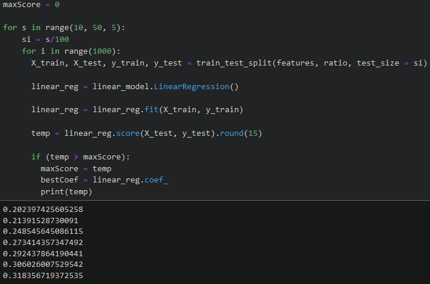
So that didn't work out well, with no model breaking the 33.518% accuracy score.
So next, I tried adding back all numerical columns without nulls, which I thought were insignificant earlier
and dropped.
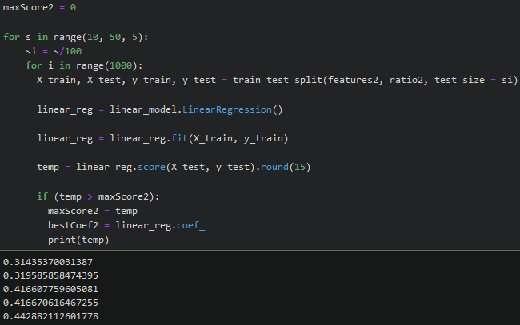
That was a shock, and because of this success, I decided to even add back more non-null but non-numerical
columns using an encoder.
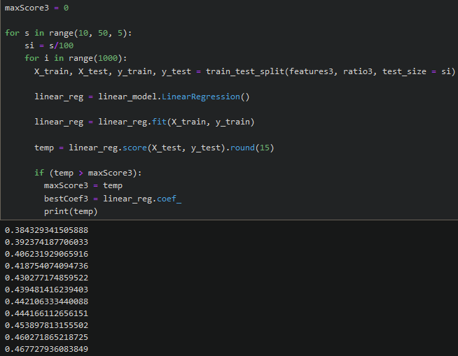
That increases the R2 score again. Although a student on Discord (Biscordman) stated that
R2 always
increases with more columns, research turns out it's a common symptom of overfitting. So moving on now,
since adding columns didn't help, I looked at the coefficients to see which column had the most impact of
all.
 Period of the class seems to have a significant positive impact with endDate and partOfTerm and the most
negative impact with startDate. While the model isn't accurate, at least these coefficients make sense, as
people are more likely to pick full terms compared to other options. The surprise is that in this model,
Computer Systems and British Literature - ENGL attributes both seem to have the most positive impact of all.
Period of the class seems to have a significant positive impact with endDate and partOfTerm and the most
negative impact with startDate. While the model isn't accurate, at least these coefficients make sense, as
people are more likely to pick full terms compared to other options. The surprise is that in this model,
Computer Systems and British Literature - ENGL attributes both seem to have the most positive impact of all.
Since the linear regression models failed to achieve a high success rate, and I am yet to learn about other
models in depth that provide predictions of continuous values. When I asked ChatGPT for ideas, it
recommended Decision Tree Regressor, which I created and which has a higher success rate. (I tried SVR
first, which I am familiar with, but the results were next to zero.)
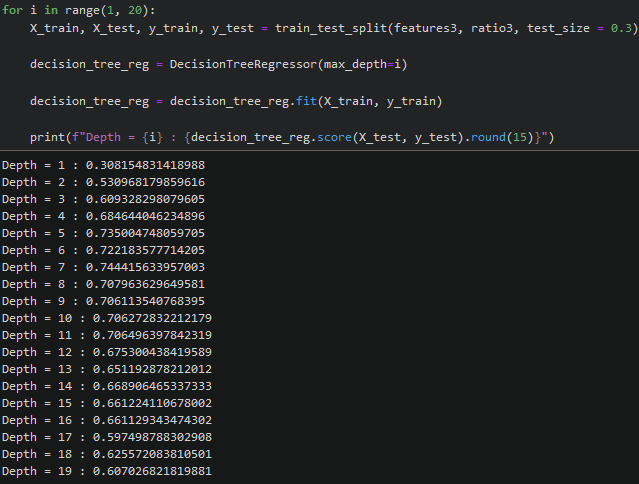
Looking at the features of one of the modals.
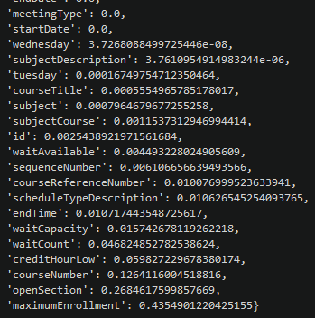
Only 18 of the features had any impact, with only nine having a 1% impact.
Storytelling and Conclusion
This project answered the question that there weren't any specific, non-directly correlated features that had an impact that a model could pick up. The three model types attempted all failed to create a well-performing model. But for the little accuracy they did have and their values that show the importance of features, we notice the very small impact of certain features. This barely minimum impact is likely what I noticed when I started asking the question of which feature impacted the fill ratio of a class the most. The impact of who is teaching a class when it is taught seems to be not as significant as I noticed in the students I interact with. If I have time, I can try other models and/or more data processing methods to try and improve the scores of a model.
Impact
If the model had worked, it would have helped students know which classes they should plan to have backups
for during registration. The negative comes in the form if someone who tries to create the model but doesn't
understand it. Like me, who didn't recognize the inaccurate score due to having too many features causing
overfitting and/or features that are directly correlated, if the model had worked and was made public, it
could also have caused stress for those who realized the courses they had to take for a specific semester
were highly likely to fill up fast.
But in the end, even though the model itself did work, it satisfied my curiosity, and I learned about the
process of data scraping in the making of this project.
Code and References
(Code File)(Dataset Used)
https://stackoverflow.com/questions/19912866/how-do-i-toggle-a-boolean-array-in-python
https://www.geeksforgeeks.org/python-string-join-method/
https://www.w3schools.com/python/pandas/ref_df_fillna.asp
https://www.geeksforgeeks.org/apply-function-to-every-row-in-a-pandas-dataframe/
https://stackoverflow.com/questions/29034928/pandas-convert-a-column-of-list-to-dummies
https://scikit-learn.org/stable/modules/generated/sklearn.linear_model.LinearRegression.html
https://scikit-learn.org/stable/model_persistence.html
https://chat.openai.com/share/691a3791-2c26-43f4-bf7a-971c2ee9686d